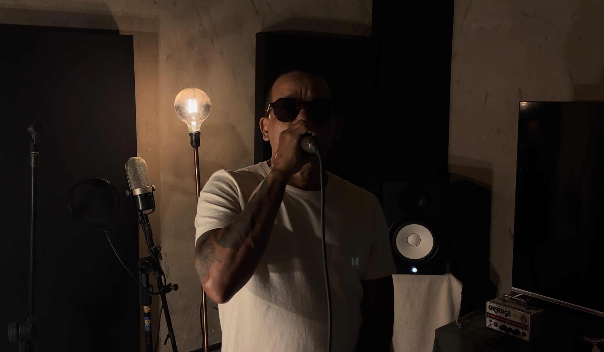
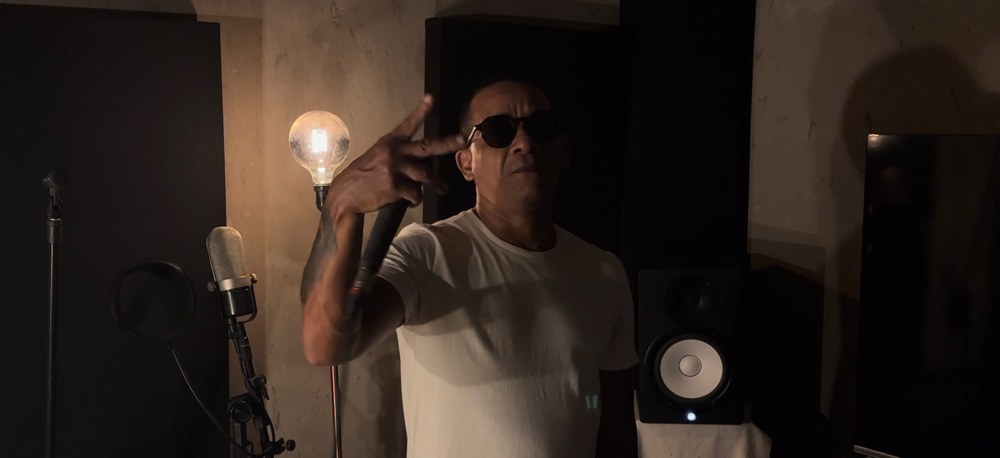

SONA presents NEGO GALLO

THE COMMON MAN WHO IS THE UNIVERSE

Nego Gallo came to hip hop in the late 90s as a listener. Not as someone who wanted to be a rapper, but as someone who needed to make sense of the world. He grew up in Morro do Moinho, in Oitão Preto, in Santo Inácio, neighbourhoods wedged between Fortaleza's (Ceará, Brazil) city centre and the sea, where having hope, as he himself says, "is what keeps you going". It was from that place that he began to write. And it was through writing that he realised that rap from Northeast Brazil did not need to imitate anyone else, that it had its own temperature, and he set about "thinking about hip hop, about rap, in a tropical place, close to an ancestry that doesn't disappear, it reinvents itself", he says.
Over more than two decades, Gallo has built a body of work rooted in the neighbourhood, the city, the region. Two solo albums, Veterano (2019) and YOPO (2024), are the most recent landmarks of that journey. But before them came Costa a Costa, a collective formed with Don L that defined, in the 2000s, what rap from the state of Ceará, or Cearense rap, could be, and that opened the way for an entire generation of artists from Northeast Brazil.
The leap from Veterano to YOPO is also a leap in scale, and "if Veterano was a search for the city, YOPO was that path inward", Gallo explains. The album was recorded during a long period of introspection, and the title carries that weight. Yopo is the name of a tree native to South America that has been used for millennia by indigenous peoples in ritual practices, a reference to the ancestral dimension that runs through the album.
Gallo was actively involved in the production, working alongside Léo Grijó and Emiciomar on the beats, navigating hip hop, trap, brega-funk, percussion touches, and other Latin rhythms. Features from renowned Brazilian rappers such as Don L, Rico Dalasam, and Diomedes Chinaski reinforce an affective map that extends far beyond Ceará. The visual concept was handled by Pará-based artist Kambô. With such breadth, the album could have lost itself in the scope of its references. But there is a centre, and Gallo names it with precision: "Based on the experiences I've had and the relationships that came to me during a certain period, I could have diluted all of that, but the whole idea of the project was precisely to put yourself in a vulnerable place, because it's intimate".

On the subject of vulnerability, Gallo cites Belchior as an important reference. He sometimes sees himself as merely "an ordinary young man, Latin American, with no money in the bank, no important relatives". Belchior's "common man" was a Northeastern Brazilian who wrote about the Latin American condition with the lucidity of someone who lives from the inside what he describes from the outside. Gallo operates in the same register, but from a different social position, reminding us that "every common man has to be the universe", and that "it is precisely this complexity that makes you understand the value of that place of existing".
Beyond being an affective reference, Gallo recalls how Belchior was, in the 70s, a central figure in the refusal to folklorise the Northeast while simultaneously refusing the empty cosmopolitanism of the more urban MPB (Música Popular Brasileira). He made music that was of a place, but was not regionalist; Latin American, but not generic. Gallo inherits that tension and translates it into rap. The music he makes is deeply Cearense without being a postcard, and deeply peripheral without being merely a denunciation. That is the knot YOPO attempts to untie, in a way that does not resolve but keeps the ends open: "when we reach the end of the album, I'm not proposing anything else, I'm proposing that tomorrow there is more", he says.
Writing from the common place also carries a cost that Gallo does not conceal. There is an implicit guilt in resting, an anxiety that total dedication to art produces, one where "an artist's commitment is in their 24 hours a day, there's no pause", and "even when there's space to rest, that rest ends up being a place of guilt too". It is the price of taking seriously a work that the industry often does not pay for, neither in money nor in recognition. And yet he insists: "I'm always in it with my whole heart. It's my life, you know?"
There is something politically precise in that stance that goes beyond individual resilience. Gallo articulates a structural critique of the artistic field without abandoning the circuits available to him for doing so, navigating between spaces, "because some social positions allow certain narratives that others don't". Origin determines access, and access determines who manages to turn art into a livelihood. Identifying that exclusionary structure brought him the clarity not to mould himself into a predetermined space, but to create "your own place of existing within all of this".
That clarity has a direct consequence in the relationship Gallo builds with his listeners. He does not take his audience for granted, he treats them as a responsibility. He attends talks and engages with spaces that have no direct connection to music, but which concern the people who listen to his work. He wants to understand what is happening with them, where they are, what the world is offering them: "I'm involved in all of this. I can't say 'I'm looking from the outside, I'm neutral'. No, I'm implicated in it. It's my existence."

This also translates into a heightened awareness of what music can no longer afford to ignore. Gallo speaks with the same ease about Fortaleza and Palestine, about Sound System culture and immigrants in Europe, because he understands that all of these things belong to the same field of forces. For him, "this is where art's commitment lies: to not be dull, but to be combative, at the very least, irreverent". Art as political positioning that allows no escape, crystallised in a sharp phrase that he delivers without grandiloquence, simply as someone stating a fact rather than preaching: "either you say 'Free Palestine', or you've died as a person".
Within this field of diverse influences, Gallo's sonic investigation also draws from the local reggae scene. When he describes the history of reggae in Fortaleza, the warehouse on Praia de Iracema with live bands, the arrival of DJs, the Sound System in the squares, he is carrying out a cultural archaeology of the city, tracing how a music born in Jamaica transforms itself as it passes through the filter of the Brazilian Northeast. "This reggae had a lot of cumbia, a lot of cumbia for the crowd to dance to", he observes. Cumbia, in turn, Colombian in origin, has for decades been circulating through Latin American peripheries, accumulating local layers. In Argentina it became cumbia villera, in Mexico cumbia norteña; in Brazil's Northeast it blended with forró and brega until it became unrecognisable to anyone searching for the genre's traditional sounds. That productive contamination is the movement that fascinates Gallo, like someone observing a living organism that changes shape as it changes hands.
The same logic guides his relationship with samples. He speaks of resignifying collective affective memories: Isaac Hayes played by a DJ on Praia de Iracema (Fortaleza, Brazil), blended with the brega music of Adair José and Northeastern popular music being recontextualised in the same way that American rap recontextualised soul and funk records from the 70s. The gesture is similar, taking something that already carries collective memory and displacing that weight into a new context, but the result is necessarily different. Gallo is precise about the distinction: "We don't have the same sound, we don't carry the same feelings", but we create a "perception of that music translated for us here in Northeast Brazil".
In his speech, Gallo explores an archive that, among countless influences, makes itself Northeastern, and in opening it, reveals that Fortaleza has always been far more engaged than is commonly acknowledged in recognising these "other places". Praia de Iracema playing Isaac Hayes alongside Jamaican reggae was no accident, it was a city that always knew its music belonged to a wider circuit than the Rio–São Paulo axis would allow you to see.

It is at this point that his work finds something larger than Cearense rap. He observes how "we're speaking the same language from Mexico down", he says. That "we" includes all peripheral Latin American artists working through the same tensions, between cultural heritage and the market, between ancestry and algorithm, between the local and the continental. Gallo sees in this an almost involuntary movement, where "the vast majority of artists are in that same frequency, because it is an ancestral movement".
There is also, throughout all of this, the question of time. Gallo speaks casually of ten years building an album, of an EP that exists "at least in his mind", of tracks made on an afternoon with Emiciomar that still have no fixed destination. That slow, non-industrial time is in direct contradiction with the logic of streaming, where the pressure is for frequent, short, playlist-optimised releases. But it is also the time that allows for the kind of work that YOPO represents: dense, situated, uncompromising.
This confrontation with the production logics of the contemporary market is not naivety, but a deliberate wager: "I want you without your phone in your hand, on the edge of a beach, thinking about what matters most to you. In a place with no traffic noise, where we can talk, exchange ideas". It is an image anchored in a precise understanding of what is lost and what he wants to preserve when you value the journey, the appreciation of the space between people, the conversation that a creative process can open.
The two tracks recorded for SONA arrive in that same spirit. New material, unfiltered, made in the same mode of commitment that defines Gallo's trajectory, a present, dedicated artist, with no anxiety about results. With YOPO, he left a promise open: "tomorrow there is more, you know, it just hasn't been recorded yet". These tracks are a reinforcement of that promise. And they suggest that whatever the next step may be, it will emerge from the same place as always, from where he came from, paper and pen in hand.